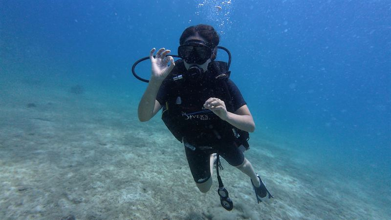
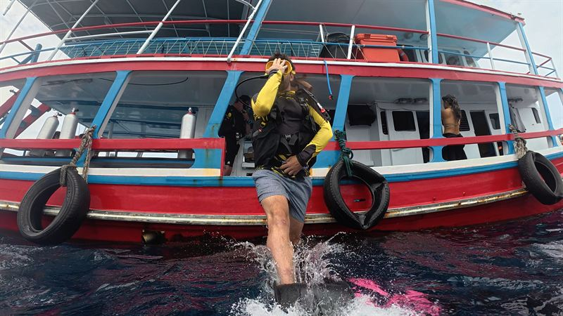

Théorie en ligne
Vous avez accès au e-learning SSI dès la réservation. Inscrivez-vous depuis chez vous et commencez à étudier avant même le début de vos vacances.

Accueil / Formations SSI / Open Water
Apprenez à plonger en trois jours et repartez avec une certification qui vous permet de plonger jusqu'à 18 mètres partout dans le monde. Petits groupes de quatre, notre propre bateau depuis Chaloklum et vos plongées en milieu naturel à Sail Rock, le meilleur site du golfe : 12,900฿ tout compris.

Quatre élèves, un instructeur
En bref
SSI Open Water Diver est la formation qui fait de vous, après un simple essai, un vrai plongeur. Vous apprenez la théorie, pratiquez les exercices dans les eaux peu profondes de la baie de Chaloklum, puis réunissez le tout lors de vraies plongées dans le golfe de Thaïlande. À la fin, vous pouvez plonger avec un binôme, sans instructeur, jusqu'à 18 mètres.
Déroulement de la formation
Chaque formation commence dans les eaux peu profondes de la baie de Chaloklum, juste devant le centre, puis passe à de vraies plongées à Sail Rock. Le programme exact dépend de la mer et du groupe, mais voici les grandes lignes.
Vous avez accès au e-learning SSI dès la réservation. Inscrivez-vous depuis chez vous et commencez à étudier avant même le début de vos vacances.
Révision de la théorie, puis les exercices de base un par un en eau peu profonde depuis la plage, et une première courte plongée. En piscine seulement si la mer ne le permet pas.
Départ en bateau pour Sail Rock. Vous refaites les exercices en vraie plongée et commencez à profiter des poissons : barracudas, poissons-chauves-souris, carangues.
Vos dernières plongées de formation, un peu plus profondes, puis l'examen final. Si la mer ou le groupe l'exigent, nous plongeons plutôt à Koh Ma, plus calme et moins profond.
Votre certification SSI apparaît immédiatement dans l'application MySSI, reconnue dans les centres de plongée du monde entier.

Votre premier pas de géant
Pour qui
Pas besoin d'avoir déjà plongé, ni d'être un athlète. Si vous êtes à l'aise dans l'eau et raisonnablement en bonne santé, cette formation est pour vous.
Pourquoi apprendre avec nous
Koh Phangan est plus calme que Koh Tao, et ses sites de plongée aussi. Apprendre sans foule autour de soi rend les premières plongées bien plus détendues, et vous plongez quand même à Sail Rock, plus proche de notre ponton de Chaloklum que de n'importe quel autre point de l'île.
Questions
12,900฿ par personne. Cela comprend votre instructeur SSI, le e-learning, tout l'équipement, les journées en bateau avec déjeuner et boissons, la vidéo de vos plongées et votre certification. Il n'y a rien d'autre à payer.
Trois jours. Avant le premier jour, vous pouvez étudier la théorie en ligne à votre rythme, ce qui laisse plus de temps dans l'eau.
Oui. SSI et PADI forment selon les mêmes normes internationales, et une certification SSI Open Water Diver est acceptée dans les centres de plongée du monde entier, y compris les centres PADI.
Non. Il faut être à l'aise dans l'eau : pouvoir nager une courte distance sans s'arrêter et flotter quelques minutes. La vitesse n'a pas d'importance, et nous le vérifions ensemble le premier jour.
Oui, dès 10 ans. Les plongeurs de 10 à 14 ans obtiennent la certification SSI Junior Open Water Diver, avec certaines limites de profondeur jusqu'à 15 ans, âge auquel la carte devient Open Water Diver complète.
Commencez par un baptême : une journée, sans certification. Si ça vous plaît, dites-le-nous et nous vous expliquerons comment continuer vers la formation Open Water. Le stress est normal, et les groupes de quatre nous laissent du temps pour chacun.
Les premiers exercices se font dans la baie de Chaloklum, en eau peu profonde depuis la plage. Nous préférons la mer à la piscine : l'eau salée n'a pas la même densité que l'eau douce, et la plage offre plus d'espace et une première courte plongée. Les plongées en milieu naturel des jours deux et trois ont lieu à Sail Rock, un pinacle en pleine mer à environ une heure de bateau. Quand la mer ou les élèves l'exigent, nous allons à Koh Ma, un jardin de corail plus calme et moins profond à dix minutes du ponton.
Maillot de bain, serviette, protection solaire et quelque chose de chaud pour le retour en bateau. Tout l'équipement de plongée est à bord, à votre taille. Si vous portez des lunettes et avez besoin d'un masque correcteur, prévenez-nous avant d'arriver.
La recommandation habituelle est de 12 heures après une seule plongée peu profonde, 18 heures après plusieurs plongées ou une plongée profonde, et 24 heures après une plongée avec décompression. La formation comporte plusieurs plongées par jour : comptez donc 18 heures. Le ferry ne demande aucune attente : nous rentrons au ponton vers 15h00, à temps pour un ferry de 17h00.
Envoyez-nous vos dates sur WhatsApp et nous vous confirmons une place dans le prochain groupe Open Water. Un acompte réserve votre place ; le reste se règle en espèces ou par Revolut.
Déjà certifié ? Découvrez les formations suivantes ou venez faire un Fun Dive.